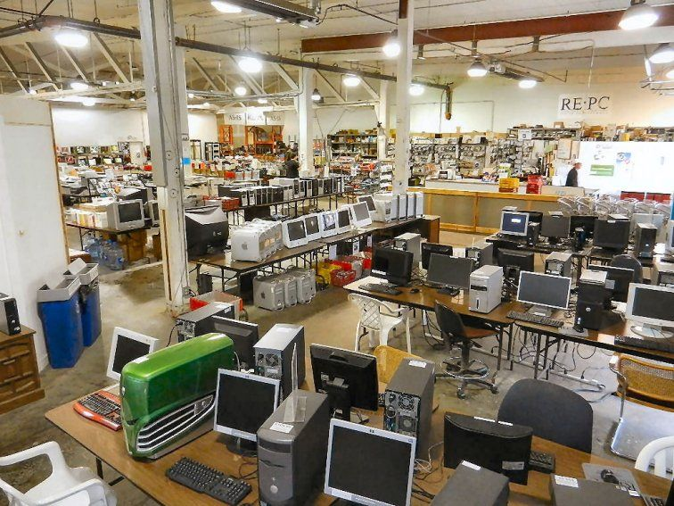
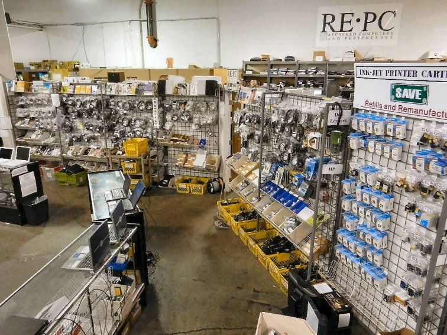
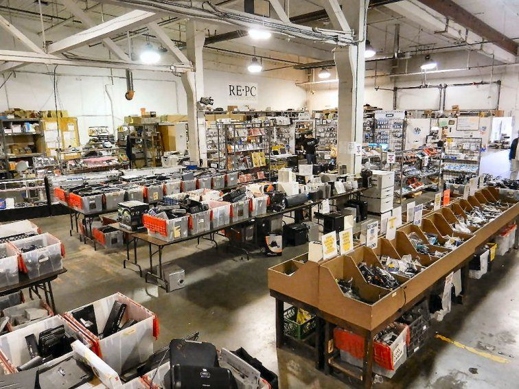
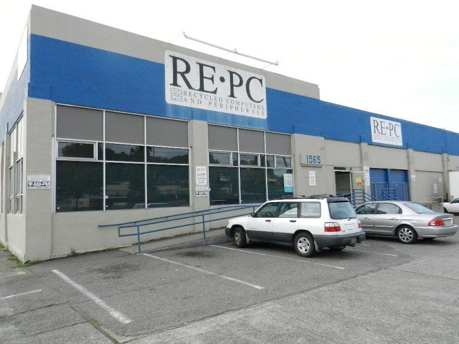

Recycling in thereusable senseof the world.
The oldest and largest computer retail recycler in the Pacific Northwest. Computers, parts, cables, monitors and just about anything under the sun, in SODO and Kent.

SEATTLE SALES FLOOR · 6TH AVE SBuy it. Sell it.Fix it. Recycle it.
What we carry changes with the times, but with an inventory this big there's always great variety and quantity.
Shop
Tested and warranted laptops, computer systems and printers, plus new motherboards, RAM, cases and hard drives.
Sell to us
We buy computers, components and peripherals. What we buy follows the market, so call the buy line first.
Drop off
We re-use as much techno-waste as we can, then separate boards, sheet metal and the rest. E-Cycle Washington collector.

Repairs
Desktop and laptop PCs and Macs, plus laptop jack repair. An inexpensive diagnostic so you can decide if it's worth it.


The famousAS-IS section.
Almost anything related to computers and electronics, priced to go. Bring a cable you can't name and we'll probably have its twin.
Stroll down randomaccess memory lane.
Just off the Seattle sales floor there's a small but representative free computer museum. Come say hi to Ada, Charles, George, Bill, Paul and the rest of the gang.
Two stores.Same rabbit hole.
Seattle
1565 6th Ave S, Seattle, WA 98134Just south of the ballpark
Home of the computer museum. To sell or recycle equipment, dial ext. 123.
Kent
7681 S 180th St, Kent, WA 98032About 1 block west of IKEA, Springbrook Business Park
Our only repair counter (ext. 202), with more room for racks, networking, software and other unusual stuff. Moved here from Tukwila.
RE-PC is a signer of the Electronic Recycler's Pledge, a member of the TAKE IT BACK! Network and a collector for the E-Cycle Washington Program.
repc@repc.com